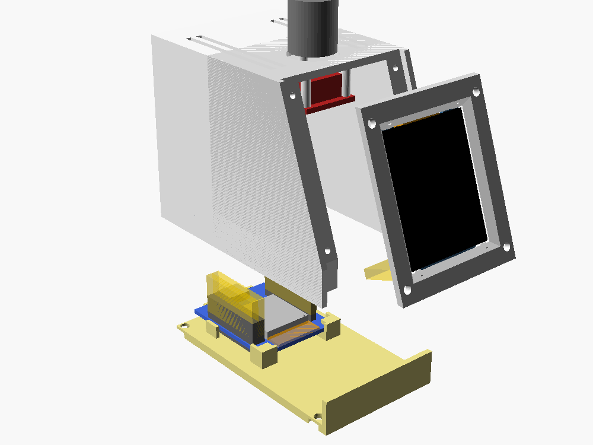
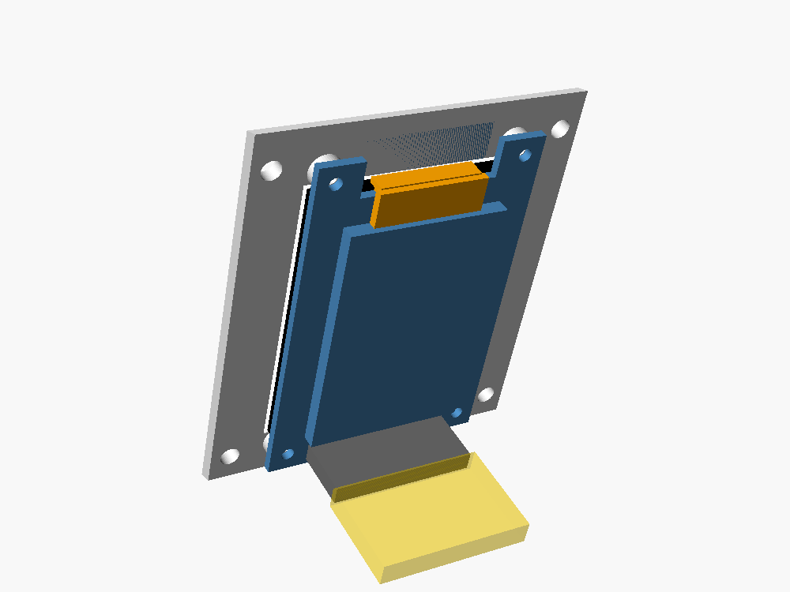
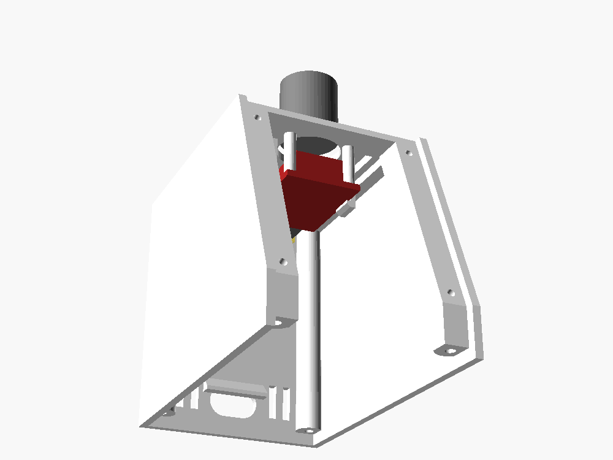
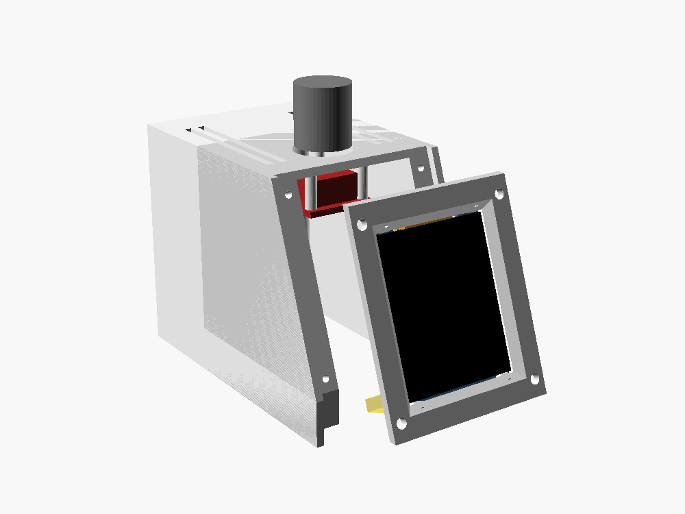
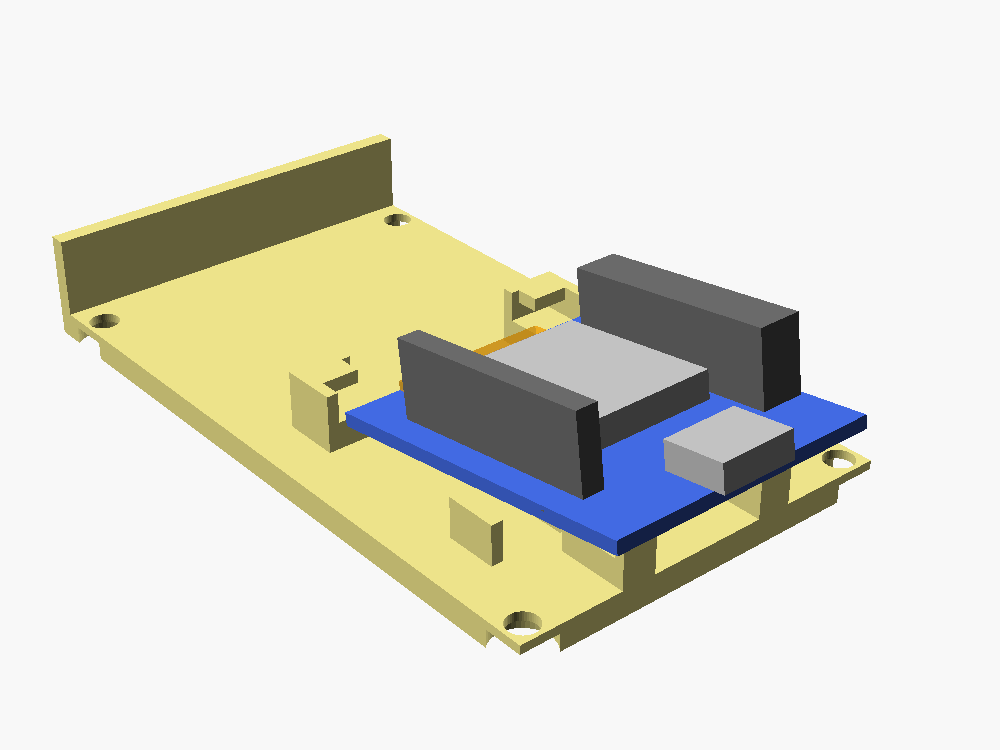
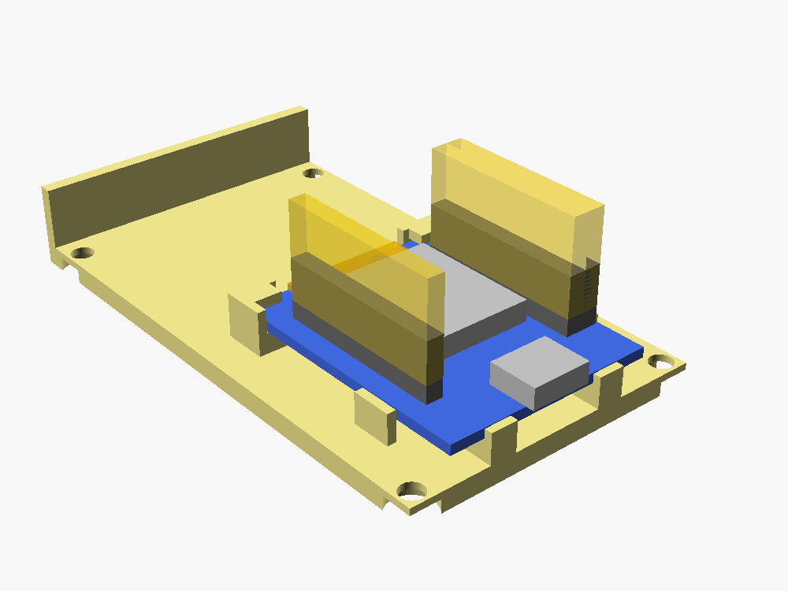
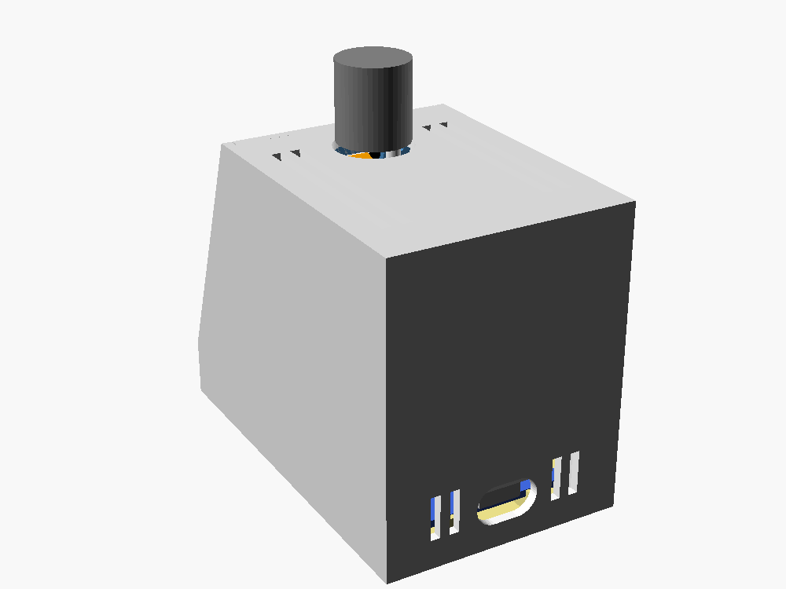
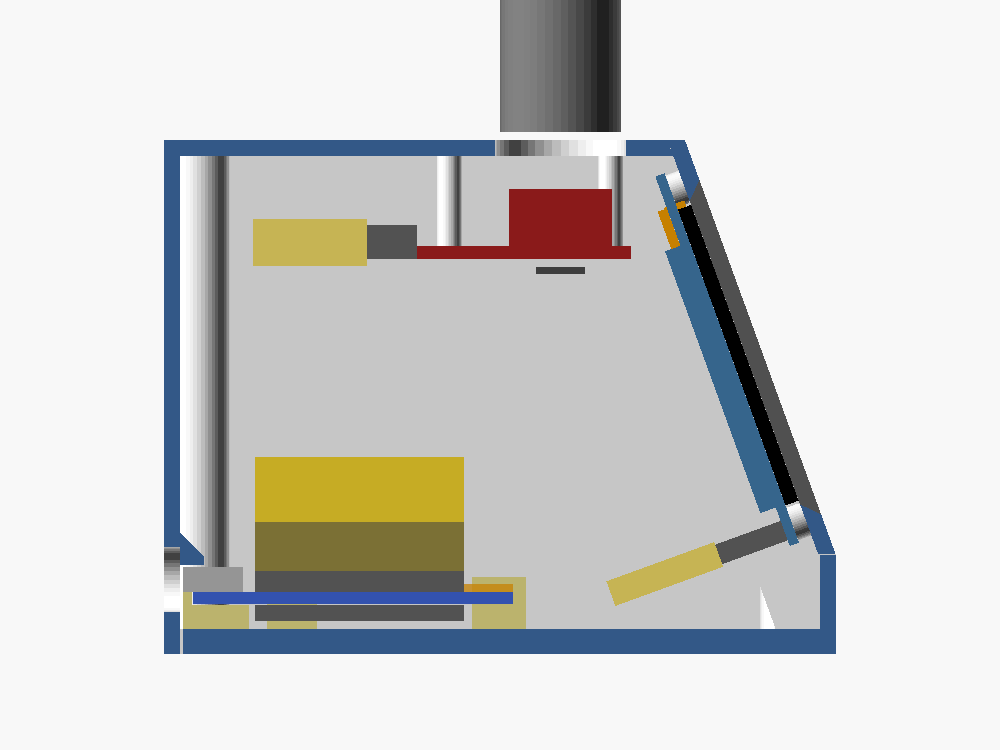

The case is three printed parts: a body, a front plate with the screen, and a floor plate with the ESP32 board. Pictures are from the case model; the screws are not drawn.
bodyfront platefloor plateESP32 boardplugs on the pins

The body is the walls, the top and the back. The front plate carries the screen. The floor plate carries the ESP32 board and the low strip under the screen. The knob goes into the body.

Lay the plate face down on the desk and put the screen on it, glass down, pins at the bottom. Four short screws go through the board's corner holes into the posts. Then push the cable's plug onto the pins.

Reach in through the open front and push the knob's board up under the top until the two hooks click over it. Then press the cap onto the shaft from outside. The two rails are what the front plate will lie on.

The plate drops in between the two side walls and lies on the rails. Four screws go in from the front, one at each corner; their heads stay visible.

The floor plate lies on the desk, on its own. Hold the board with the USB end a little higher and slide the other end forward, under the two tabs.

Lower the USB end until the board lies flat. Two small blocks behind it stop it sliding back. Then push the screen's and the knob's plugs onto the pins.

Lower the body over the floor plate and put in 4 screws (M3 x 10) from underneath. The USB socket ends up behind the hole in the back.

This is the closed case cut through the middle. At the front end of the board, the tabs hold it down. At the back end, a small ledge inside the body sits just above the USB socket. Nothing clicks and nothing is glued.